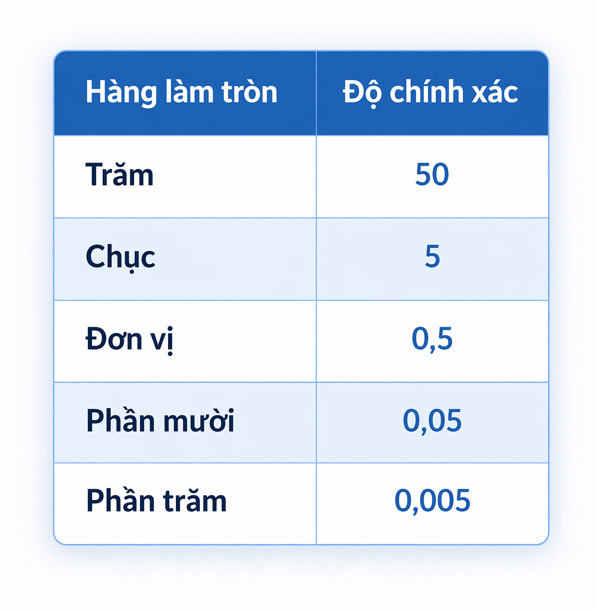

• Số thập phân vô hạn tuần hoàn là số thập phân có phần thập phân lặp lại vô hạn.
• Chu kì của số thập phân vô hạn tuần hoàn là nhóm chữ số được lặp lại liên tiếp vô hạn lần.
• Ví dụ:
0,3333... có chu kì là 3.
0,121212... có chu kì là 12.
• Số thập phân hữu hạn là số thập phân có số chữ số sau dấu phẩy hữu hạn.
Ví dụ: 0,8 ; 1,25 ; 3,75 ; ...
• Khi làm tròn số đến một hàng nào đó, kết quả làm tròn có độ chính xác bằng một nửa đơn vị của hàng làm tròn.
• Muốn làm tròn số thập phân, ta xét chữ số ngay bên phải hàng làm tròn.
• Nếu chữ số đó nhỏ hơn 5 thì giữ nguyên.
• Nếu chữ số đó lớn hơn hoặc bằng 5 thì tăng hàng làm tròn lên 1 đơn vị.
